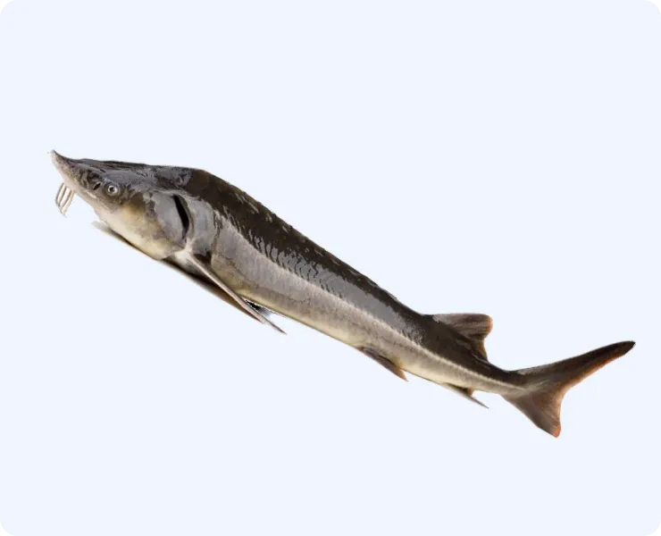

Рыба для пруда
Беcтер
Цена и наличие
- 8-15 см18 BYN / шт.В наличии
- 15-20 см24 BYN / шт.В наличии
- 20-30 см30 BYN / шт.В наличии
- 30-50 см38 BYN / шт.В наличии
Данные на 23.11.2026.
Характеристики
- Внешний вид
- Имеют вытянутое, напоминающее форму торпеды, тело, шкура обычно гладкая и без чешуек (но может быть покрыта мелкими пигментированными пятнами)
- Сезонность
- Март-ноябрь
- Возраст
- Сеголетки, годовики
- Максимальный вес
- До 30 кг
- Продолжительность жизни
- Ориентировочно 20–40 лет при благоприятных условиях содержания. Фактическая продолжительность жизни зависит от качества воды, кормления, температурного и кислородного режима
- Половая зрелость
- Бестер созревает значительно раньше белуги. Самцы обычно достигают половой зрелости примерно в 3–5 лет, самки — в 8–11 лет. Возраст созревания зависит от температуры воды, темпа роста и условий содержания
- Питается
- Бестер — преимущественно животноядная донная рыба. В рацион входят личинки водных насекомых, черви, моллюски, ракообразные и другие донные беспозвоночные. По мере роста может поедать небольшую рыбу. При искусственном содержании основой питания рекомендуется делать специализированный полнорационный тонущий корм для осетровых
- Температура воды для активного питания и размножения
- Наиболее благоприятная температура для активного питания и роста составляет примерно 18–25 °C. При контролируемом рыбоводном воспроизводстве оптимальная температура составляет около 18–20 °C. При длительном повышении температуры выше 25–26 °C необходимо особенно внимательно контролировать содержание растворенного кислорода
- Условия пруда для содержания
- Для содержания необходим просторный пресноводный пруд с чистой, хорошо насыщенной кислородом водой и достаточной площадью свободного дна. Желательны постоянная аэрация и умеренная циркуляция воды. Содержание растворенного кислорода рекомендуется поддерживать около 6 мг/л и выше. Не следует допускать сильного заиливания, большого количества разлагающейся органики и резких изменений качества воды
- Рост
- Сеголетки 100-500 г, двухлетки 1000-5000 г, трехлетки 5000-20000 г
Описание
Бестер — это гибридная разновидность рыбы, полученная путем скрещивания двух видов (белуги и стерляди) семейства осетровых.
Условия обитания
Бестер — искусственно полученный гибрид белуги (Huso huso) и стерляди (Acipenser ruthenus). Классический бестер получают путем скрещивания самки белуги с самцом стерляди. Гибрид сочетает высокий потенциал роста белуги с более ранним половым созреванием и хорошей приспособленностью стерляди к жизни в пресной воде. Бестер хорошо подходит для выращивания в пресноводных прудах, бассейнах и других рыбоводных системах. Большую часть времени он проводит возле дна, поэтому в водоеме необходимо предусмотреть достаточную площадь свободной донной зоны. Толстый слой разлагающегося ила, большое количество органических отходов и густые заросли подводной растительности нежелательны. Особенно важен стабильный кислородный режим. Для хорошего роста желательно поддерживать содержание растворенного кислорода около 6 мг/л и выше. Летом при нагревании воды необходимость в аэрации возрастает, поскольку в теплой воде содержится меньше растворенного кислорода, а обмен веществ рыбы становится более интенсивным. Бестер способен переносить широкий диапазон температур, но наиболее активно растет примерно при 18–25 °C. Продолжительный перегрев воды выше 25–26 °C нежелателен, особенно при высокой плотности посадки и интенсивном кормлении. Бестера можно содержать вместе с другими крупными прудовыми рыбами при достаточном объеме водоема и подходящем качестве воды. При этом необходимо учитывать его животный рацион: крупные особи способны поедать небольшую рыбу и малька.
Размножение
Бестер является фертильным гибридом, способным производить полноценные половые продукты. Самцы обычно созревают раньше самок — примерно в возрасте 3–5 лет, тогда как половое созревание самок чаще происходит примерно в 8–11 лет. Для получения стабильного потомства бестера в рыбоводстве используют контролируемое искусственное воспроизводство. У производителей определяют степень зрелости половых продуктов, получают икру и молоки, проводят искусственное оплодотворение, после чего икру инкубируют в специальных аппаратах с постоянным водообменом и высоким содержанием кислорода. Икра осетровых клейкая и в естественных условиях развивается на твердом донном субстрате в проточной хорошо насыщенной кислородом воде. Бестер не строит гнезд и не проявляет родительской заботы о потомстве. В обычном стоячем частном пруду рассчитывать на самостоятельное стабильное размножение бестера не следует. Для успешного естественного нереста осетровым необходим комплекс условий — подходящая температура, течение, твердый нерестовый субстрат и высокий уровень растворенного кислорода. При целенаправленном разведении бестера воспроизводство лучше проводить в контролируемых рыбоводных условиях, где можно поддерживать температуру примерно 18–20 °C и необходимые параметры воды.
Кормление
Бестер — преимущественно животноядная рыба, которая ищет большую часть пищи непосредственно возле дна. В естественной кормовой базе пруда он способен использовать личинок водных насекомых, червей, моллюсков, мелких ракообразных и других донных беспозвоночных. По мере роста в рационе может увеличиваться доля небольшой рыбы. При выращивании в пруду основу питания рекомендуется составлять из полнорационного тонущего корма для осетровых. Такой корм должен содержать достаточное количество легкоусвояемого белка, жиров, витаминов и минеральных веществ. Обычный корм для карпа не подходит в качестве полноценной основы рациона бестера. Размер гранул подбирают в соответствии с размером рыбы. Корм должен опускаться на дно, где бестер способен спокойно его собирать. Суточную норму необходимо корректировать в зависимости от температуры воды, возраста рыбы и фактической пищевой активности. Наиболее интенсивное питание происходит примерно при 18–25 °C. При охлаждении воды потребность в корме постепенно уменьшается. В жаркую погоду при высокой температуре особенно важно контролировать кислород и не допускать перекармливания. Несъеденный высокобелковый корм быстро ухудшает качество воды, увеличивает количество органики и повышает нагрузку на кислородный режим. Хороший рост бестера обеспечивается сочетанием полноценного кормления, чистой воды, стабильной аэрации и правильной плотности посадки.
Зимовка
Бестер способен зимовать в открытом пруду в климатических условиях Беларуси при правильно подготовленном водоеме. Гибрид хорошо переносит сезонное снижение температуры, а в холодной воде его обмен веществ и интенсивность питания постепенно уменьшаются. Зимой бестер не впадает в настоящую спячку. Рыба остается способной перемещаться возле дна и может сохранять небольшую пищевую активность, однако потребность в корме становится значительно ниже. Кормление сокращают по мере охлаждения воды и проводят только тогда, когда рыба продолжает активно принимать корм. Основное условие успешной зимовки — достаточное содержание растворенного кислорода. Поскольку бестер преимущественно держится возле дна, особенно важно не допускать кислородного дефицита в придонной зоне. Пруд должен иметь глубокую непромерзающую часть, а перед зимой желательно удалить избыток ила, опавших листьев, отмирающей растительности и другой органики. В небольших, непроточных или плотно зарыбленных водоемах рекомендуется использовать зимнюю аэрацию, обеспечивающую стабильный газообмен без чрезмерно сильного перемешивания самой глубокой части пруда.